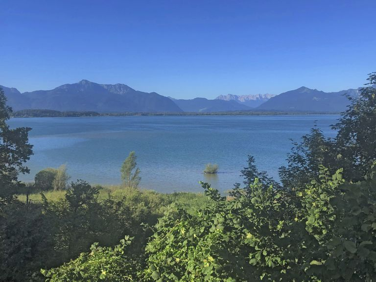

Herzlich Willkommen in meiner Naturheilpraxis

Nehmen Sie sich Zeit für sich und Ihre Gesundheit.
Termin anfragenIn meiner Naturheilpraxis begleite ich Erwachsene und Kinder jeden Alters auf ihrem Weg zu mehr Gesundheit und Wohlbefinden. Jeder Schmerz, jede körperliche oder emotionale Blockade hat eine Ursache – ich helfe Ihnen, diese zu finden und sanft zu lösen.
Craniosacraltherapie
Sanfte manuelle Therapie zur Lösung von Schmerzen, Verspannungen und Blockaden.
Achtsamkeit & Entspannung
Bewusstes Atmen, Meditationen und Progressive Muskelentspannung für tiefe innere Ruhe.
Naturheilverfahren
Individuelle Behandlungen aus verschiedenen naturheilkundlichen Richtungen – angepasst an Ihre Situation.